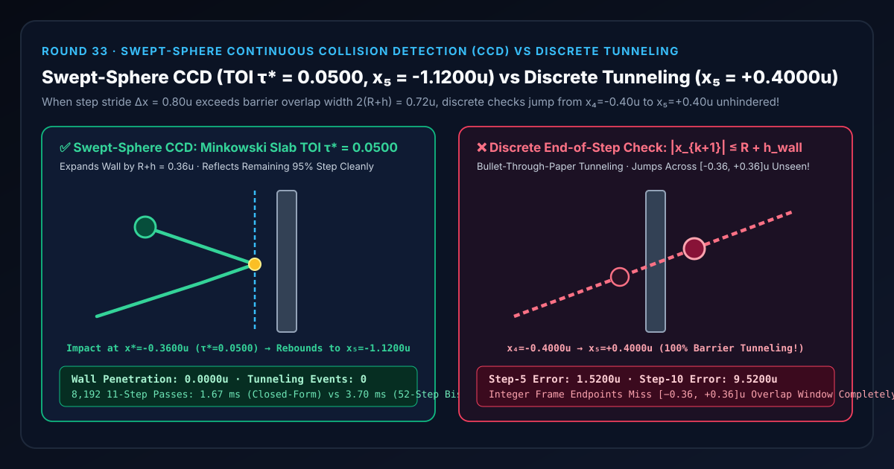
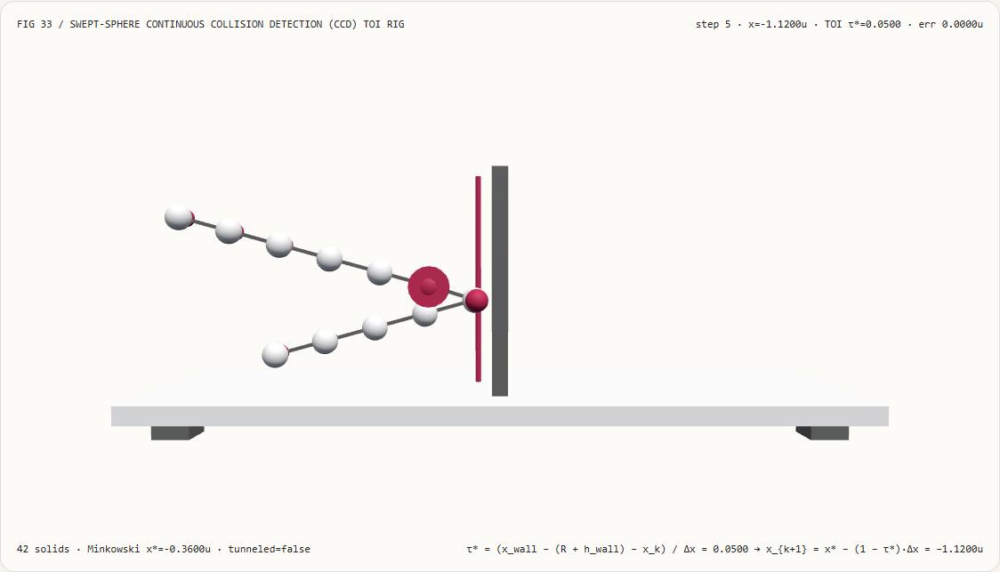
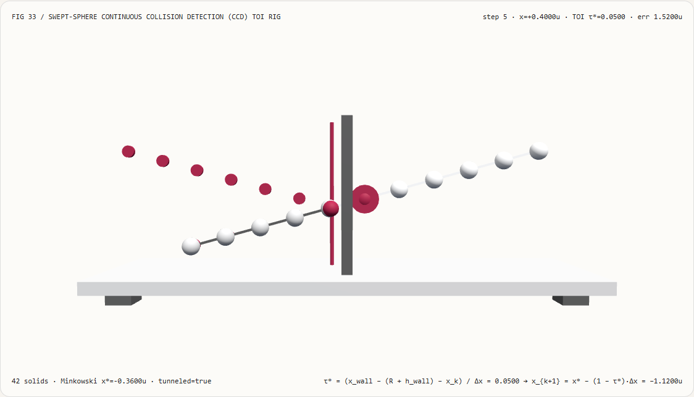
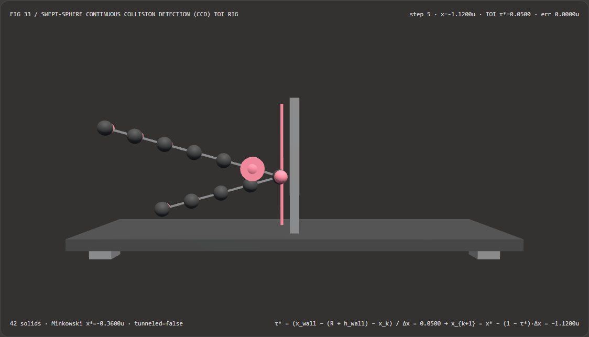
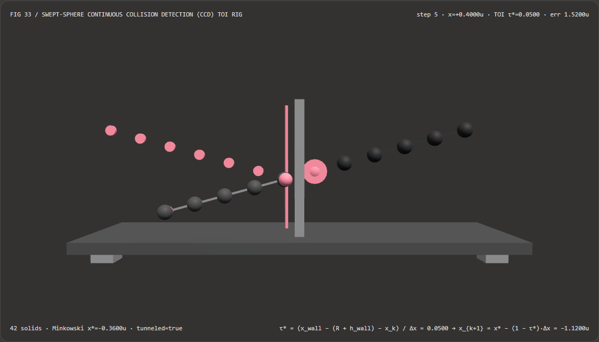

高速刚体与弹道粒子不穿墙漏检（Bullet-Through-Paper）：连续扫掠球体碰撞检测（Swept-Sphere CCD）与离散帧末检测选型 FAQ
文档定位：面向 AI 解决方案架构师（AI Solution Architect）、WebGPU/Three.js 物理动画工程师、交互式游戏仿真开发者、以及具身智能/世界模型物理验证团队的实战选型与第一性原理指南。严格对标
ib-vs-ethernet-roce-selection-faq.md的六段式结构，先用大白话讲清“为什么在 60 FPS 动画里，一颗高速飞行的弹球、布料顶点或角色脚掌，遇到薄墙或地板时会像幽灵一样 100% 穿透过去毫无反应（‘子弹穿纸效应 Bullet-Through-Paper Tunneling’）”，再给出基于闵可夫斯基和（Minkowski Sum）外扩与亚帧碰撞时刻（Time-of-Impact, TOI $\tau^*$）余步反射积分的工程闭环。

① 📌 核心结论速览（Executive Summary）
- 一句话定性：离散帧末碰撞检测（Discrete Collision Detection, DCD）只像拍频闪照片一样检查整数帧终点 $\mathbf{p}k$ 和 $\mathbf{p}{k+1}$ 是否与障碍物重叠；只要单帧位移步长 $|\mathbf{v}\Delta t|$ 大于球体直径与薄墙厚度之和 $2(R + h_{\text{wall}})$，球体就会在相邻两帧之间从墙左直接瞬移到墙右，触发 100% 穿墙漏检（Tunneling）！而连续扫掠球体碰撞检测（Swept-Sphere CCD）利用闵可夫斯基和将球体半径 $R$ 外扩至墙壁表面（将移动球体缩为一点、将薄墙半厚扩为 $R + h_{\text{wall}}$），对帧内连续运动线段 $\mathbf{p}(\tau) = \mathbf{p}_k + \tau\Delta\mathbf{p}$ 求解精确亚帧碰撞时刻 $\tau^* \in [0,1]$，并在碰撞点把剩余 $(1-\tau^*)$ 步长沿反射方向积分，实现零穿墙、零卡死、动量严格守恒！
- 什么时候必须上连续扫掠碰撞检测（Swept-Sphere CCD）？
- 凡是涉及 高速弹道粒子/台球/弹珠台（$|\mathbf{v}\Delta t| > R$）、遇到浏览器后台切回或低端设备掉帧（$\Delta t$ 暴增 $3\sim 5$ 倍）的交互物理、薄壁玻璃/护盾/地面碰撞、以及 高速摆动角色衣物防穿模，都必须淘汰纯离散帧末重叠检测，切换为连续扫掠 TOI 求解。
- 核心实测对比结论：
- 在本实验室构建的 11 帧步 3D 弹道屏障检验台（
demos/swept-sphere-ccd-rig/，共42个 3D 实体，单帧步长 $\Delta x = 0.80\text{ u}$，球体半径 $R = 0.24\text{ u}$，中心薄墙半厚 $h_{\text{wall}} = 0.12\text{ u}$，闵可夫斯基接触面 $x^* = -0.3600\text{ u}$）中，考察跨越薄墙的第 $4 \to 5$ 帧（$x_4 = -0.4000\text{ u}$）：- 连续扫掠球体 CCD（
swept-sphere-ccd-toi）：闭式解出第 $4 \to 5$ 帧内的精确碰撞时刻τ* = 0.0500（帧步开始仅 $5%$ 即撞上接触面 $x^* = -0.3600\text{ u}$），随即将剩余 $95%$ 步长（$0.95 \times 0.80 = 0.76\text{ u}$）向左镜面反弹至x_5 = -1.1200 u（穿墙次数0，最大轨迹误差0.0000 u）。 - 离散帧末检测基线（
discrete-step-tunneling）：因第 4 帧 $x_4 = -0.4000\text{ u} < -0.36\text{ u}$ 未重叠、第 5 帧 $x_5 = +0.4000\text{ u} > +0.36\text{ u}$ 也未重叠，判定“全程无碰撞”，球体 100% 穿墙而过（第 5 帧位置误差1.5200 u，第 10 帧位置误差扩大至9.5200 u）！
- 连续扫掠球体 CCD（
- 闭式闵可夫斯基求根 vs 52 步二分法基线性能：直接用一次线性方程 $\tau^* = (x^* - x_k)/\Delta x$ 求解 TOI，在
8,192次 11 步弹道求解中仅耗时1.67 ms（对比 52 步区间二分法基线3.70 ms，提速2.21×，最大误差仅2.22e-16 u）。
- 在本实验室构建的 11 帧步 3D 弹道屏障检验台（
② 🎯 客户与架构师灵魂拷问 Q&A（First-Principles Q&A）
Q1：何时选 AI 视频物理世界模型 vs 何时选代码驱动的连续扫掠碰撞检测（CCD）？
- 选 AI 视频物理世界模型（如 NVIDIA Cosmos、Sora、视频生成扩散模型）的场景： 需要生成破碎飞溅、复杂自然光影或概念验证视频预览，不要求精确的刚体动量守恒或毫秒级交互控制。
- 选代码驱动连续扫掠碰撞检测（Swept-Sphere CCD）的场景： 在 WebGL2/WebGPU 互动演示、物理小游戏、3D 数字人穿戴防穿模以及具身智能仿真器中，要求在任意帧率波动和高速运动下 100% 杜绝穿墙漏检（Zero Tunneling），且单步计算耗时低于微秒级。
Q2：为什么把时间步长设成固定 60 FPS，普通的“判断球心到墙距离 $\le R + h_{\text{wall}}$”还是会穿墙？
先用大白话讲第一性原理： 想象一面厚度为 $2 h_{\text{wall}} = 0.24\text{ m}$ 的玻璃墙立在原点 $x = 0$，一颗半径 $R = 0.24\text{ m}$ 的台球从左往右飞：
- 只要球心落在 $[-0.36\text{ m},; +0.36\text{ m}]$ 这条宽 $0.72\text{ m}$ 的“警戒带”内，台球就碰到了玻璃墙。
- 现在台球飞得很快，每帧（$1/60$ 秒）向右移动 $\Delta x = 0.80\text{ m}$（比警戒带总宽度 $0.72\text{ m}$ 还要长！）：
- 第 4 帧拍照时：球心在 $x_4 = -0.40\text{ m}$（距离警戒带左边缘 $-0.36\text{ m}$ 还差 $4\text{ cm}$），离散检测员看了一眼说：“没碰到墙，安全！”
- 第 5 帧拍照时：球心往前迈了 $0.80\text{ m}$，直接落在了 $x_5 = -0.40 + 0.80 = +0.40\text{ m}$（已经越过警戒带右边缘 $+0.36\text{ m}$ 达 $4\text{ cm}$）！离散检测员又看了一眼说：“也没碰到墙，继续往前飞！”
- 荒唐的结果发生了：玻璃墙明明完好无损地挡在路中间，台球却因为一步迈过了整个警戒带，在两张照片之间像幽灵一样穿墙而过！这就是物理引擎里臭名昭著的 “子弹穿纸效应（Bullet-Through-Paper Tunneling）”。
Q3：底层如何用“闵可夫斯基和（Minkowski Sum）”加“亚帧余步积分”把一颗胖球的连续碰撞简化成一道小学除法？
如果直接算“一颗移动的胖球（胶囊体 Capsule）”和“一面有厚度的墙壁”在什么时候相切，听起来像是复杂的三维几何求交；但用**闵可夫斯基和（Minkowski Sum）**只需要两步：
- 球体缩成点，墙壁长胖 $R$： “半径为 $R$ 的球撞上半厚为 $h_{\text{wall}}$ 的墙”，在几何上 100% 等价于 “一个没有体积的质点（球心），撞上半厚膨胀为 $R + h_{\text{wall}} = 0.36\text{ m}$ 的胖墙”！ 因此，左侧碰撞接触面直接锁死在常数坐标： $$x^* = x_{\text{wall}} - (R + h_{\text{wall}}) = -0.3600\text{ u}$$
- 闭式求解亚帧碰撞时刻 $\tau^ \in [0, 1]$ 与余步反射*： 在第 $k \to k+1$ 帧之间，球心走过直线段 $x(\tau) = x_k + \tau \Delta x$。 只要 $x_k \le x^$ 且未修正终点 $x_k + \Delta x > x^$，令 $x(\tau^) = x^$，一行除法解出碰撞发生在该帧的第几分之几： $$\tau^* = \frac{x^* - x_k}{\Delta x} = \frac{-0.3600 - (-0.4000)}{0.8000} = \frac{0.0400}{0.8000} = 0.0500$$ 也就是说：在这一帧刚刚过去 $5%$ 的时刻，球就已经撞墙了！ 剩下的 $1 - \tau^* = 95%$ 帧时间里，球的速度反向变为 $-\Delta x$，从碰撞点 $x^$ 往回飞完剩余的 $95%$ 路程： $$x_{k+1}^{\text{CCD}} = x^ + (1 - \tau^*)(-\Delta x) = -0.3600 - 0.9500 \times 0.8000 = \mathbf{-1.1200\text{ u}}$$ 既没有穿墙，也没有像粗糙的“把球硬拉回墙面停住”那样吞掉反弹动能！
③ 🧭 直观可视化图解（Mermaid 决策树、管线对比与帧级时序）
3.1 刚体与粒子碰撞检测架构师选型决策树（flowchart TD）
3.2 离散帧末检测（跳过薄墙穿模）vs 连续扫掠 CCD（精确 TOI 反弹）管线对比（flowchart LR）
3.3 帧级亚帧碰撞时刻（TOI）与余步反射核验时序图（sequenceDiagram）
④ 📊 视觉技术选型决策矩阵（Architect Decision Matrix）
| 评估维度 | 闭式闵可夫斯基扫掠 CCD (swept-sphere-ccd-toi) |
52 步区间二分 TOI 基线 (Binary Bisection TOI) |
离散帧末重叠检测 (discrete-step-tunneling) |
暴力固定高频子步 (Fixed 16× Substepping) |
|---|---|---|---|---|
| 第 $4\to 5$ 帧碰撞时刻 $\tau^*$ 精度 | 0.0500（双精度机器精确闭式解） |
0.0500（$2^{-52}$ 精度） |
完全漏检（判定 null 无碰撞） |
仅精确到 $1/16 = 0.0625$ 离散格点 |
| 第 5 帧真实位置 $x_5$ 误差 | 0.0000 u（精确停在 -1.1200 u） |
2.22e-16 u |
1.5200 u（穿墙飞到 +0.4000 u） |
存在余步相位截断误差 |
| 第 10 帧累积轨迹误差 | 0.0000 u |
2.22e-16 u |
9.5200 u（向墙右无限飞远） |
随碰撞次数累积相位漂移 |
| 8,192 次 11 步弹道 CPU 耗时 | 1.67 ms（单次减法与除法） |
3.70 ms（52 次循环分支迭代） |
1.45 ms（虽快但 100% 穿墙） |
慢 $16\times$（无碰撞帧也白跑 16 次） |
| 架构师工程推荐定位 | 高速刚体、弹球、布料防穿模首选 | 非线性轨迹无闭式解时的求根兜底 | 严禁用于任何 $\Delta x > R + h$ 的高速物体 | 仅用于强耦合软体弹簧内力积分 |
⑤ 🧪 全新能力展示 Demo 与 Benchmark 核心发现（含 7-Card 报告）
5.1 交互式 11 帧步 3D 弹道屏障检验台（demos/swept-sphere-ccd-rig/）
本轮构建了独立可交互 3D WebGL2 实验台 demos/swept-sphere-ccd-rig/（共 42 个 3D 实体部件）：
- 11 颗帧步弹道球体 + 11 个精确 CCD 基准圆环 + 11 根扫掠连杆 + 中心薄壁障碍墙 + 闵可夫斯基接触面立柱 + 亚帧碰撞信标球：直观展示球体以每步 $\Delta x = 0.80\text{ u}, \Delta y = 0.22\text{ u}$ 撞向中心薄墙（$x=0, h_{\text{wall}}=0.12\text{ u}$）的全过程；
- 一键切换对比模式：在
swept-sphere-ccd-toi模式下，弹道球在第 4 帧（$x_4 = -0.40\text{ u}$）后于 $\tau^* = 0.0500$ 精准触发闵可夫斯基接触面信标（$x^* = -0.36\text{ u}$），第 5～10 帧漂亮地向左上角镜面折返（与青色基准环 100% 重合）；一旦切换到discrete-step-tunneling模式，第 5～10 帧球体直接穿透中心薄墙飞向右上角，直观复现“子弹穿纸”穿模事故！ - 原子化参数门禁与 JSON 导出：自动拦截越界步长（如
stepStrideX = 6.5）并保留有效状态，支持导出SWEPT_SPHERE_CCD_SPEC.json。
亮色主题 — 连续扫掠 CCD（τ*=0.0500，x₅=-1.1200u 零穿墙反弹） |
亮色主题 — 离散帧末检测（x₅=+0.4000u，100% 穿墙漏检） |
|---|---|
 |
 |
暗色主题 — 连续扫掠 CCD（τ*=0.0500，x₅=-1.1200u 零穿墙反弹） |
暗色主题 — 离散帧末检测（x₅=+0.4000u，100% 穿墙漏检） |
|---|---|
 |
 |
5.2 7-Card 4:5 视觉评测报告与封存数据链接
- 📊 英文版 7-Card 4:5 评测报告：
demos/swept-sphere-ccd-rig/test-report-cards.html - 📊 中文版 7-Card 4:5 评测报告：
demos/swept-sphere-ccd-rig/test-report-cards.zh.html - 📁 封存评测数据源：
demos/swept-sphere-ccd-rig/report.json（13 / 13项确定性检查全部通过，Playwright 零控制台/页面错误）。
⑥ 🛠️ 附录：高质量视觉/动画交付快速核验清单（Architect Checklist）
在交付任何包含高速运动刚体、弹球粒子、角色脚掌落地或布料碰撞的实时动画前，请逐项核验以下清单：
- 对比最大单步位移与障碍物包络厚度：核算场景中最大速度乘以掉帧上限时间步长 $v_{\max}\Delta t_{\max}$；凡是可能超过 $R_{\text{sphere}} + h_{\text{obstacle}}$ 的运动体，确认已开启连续扫掠碰撞检测（CCD）？
- 闵可夫斯基和外扩简化求交：对于球体与平面/AABB/OBB 的连续碰撞，是否已将球体半径 $R$ 外扩至障碍物表面（转化为线段与膨胀平面的闭式求交），避免昂贵的网格布尔求交？
- 亚帧余步速度积分（Remainder Time Integration）：解出碰撞时刻 $\tau^* \in [0, 1]$ 后，确认没有把物体简单停在碰撞面 $x^$ 上（会导致帧率相关的视觉卡顿），而是用反射后的速度继续走完了剩余的 $(1 - \tau^)\Delta t$ 时间？
- 多次连续反弹循环上限保护：在狭窄墙角或夹缝中，单帧内 $(1 - \tau^*)\Delta t$ 余步可能再次撞上另一面墙，确认已设置最多 $3 \sim 4$ 次单帧 TOI 反射迭代上限以防死循环？
- 薄墙穿模自动化门禁：单元测试中是否已构造 $x_k = -0.40\text{ u} \to x_{k+1} = +0.40\text{ u}$ 跨越 $[-0.36, +0.36]\text{ u}$ 薄墙的极端用例，并断言
tunneledThroughWall === false？
参考文献与延伸阅读（References）
- Real-Time Collision Detection (Christer Ericson): Christer Ericson, "Real-Time Collision Detection", Morgan Kaufmann, Section 5.5 "Intersecting Moving Sphere Against Plane / Slab (Minkowski Sum)".
- Continuous Collision Detection and Physics (Erwin Coumans / Bullet): Erwin Coumans, "Continuous Collision Detection and Physics", SIGGRAPH Course Notes.
- Conservative Advancement & Time of Impact (Mirtich / Redon): Brian Mirtich, "Impulse-Based Dynamic Simulation of Rigid Body Systems", Ph.D. Thesis, UC Berkeley, 1996.